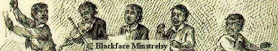
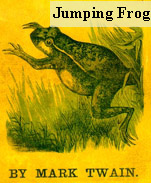
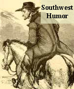
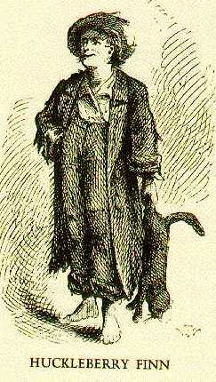
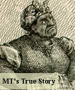
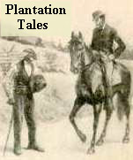

Sources and Pre-Texts for Huck FinnThe picture below center is Huck's first appearance in MT's fiction, when he walks into Tom Sawyer's novel carrying a dead cat. One of American literature's most fascinating sights is watching Huck's role in that novel grow as his figure attracts more and more of MT's imagination. Writing Tom Sawyer led MT back to his own childhood, and that somehow led him to Huck. MT became so absorbed that he began writing Huckleberry Finn -- and letting Huck tell the story himself -- even before Tom Sawyer was published. Scholars have suggested many other, more documentable sources for this novel that Hemingway said "all modern American literature comes from." Five of them are represented here. |
|  |
  |
 |   |